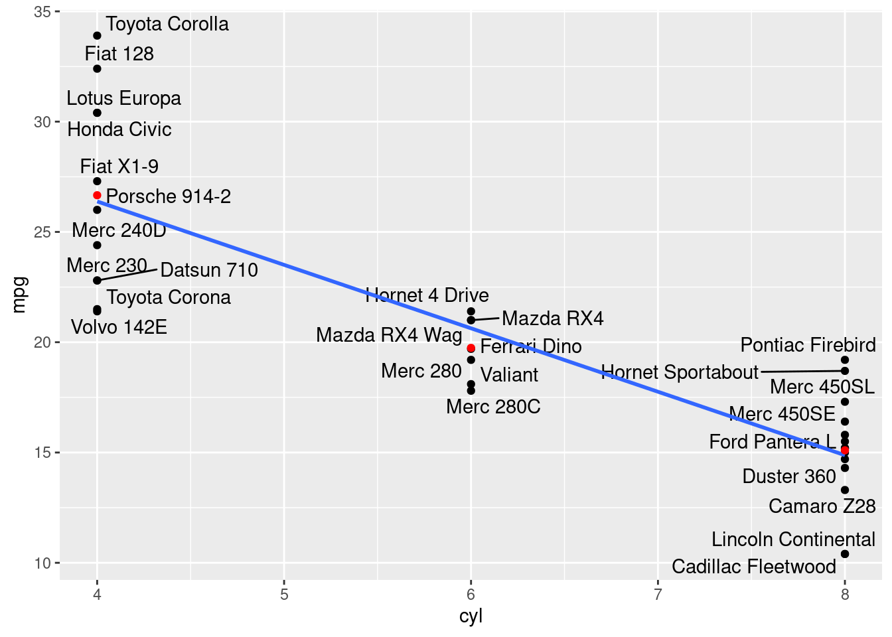
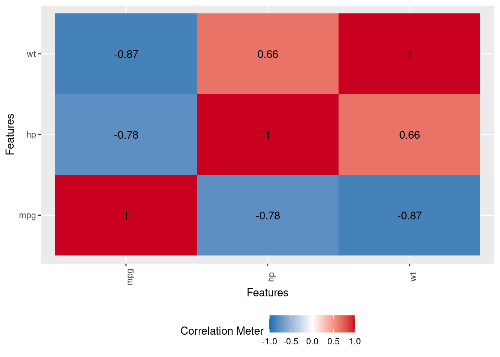

library(tidyverse)
library(janitor)
library(nortest)
library(DataExplorer)
library(ggrepel)
library (plotly)
library(MASS)
library(rgl)
library(car)Regressão Linear
Base de Dados
Para os próximos exemplos iremos utilizar a base de dados MTCARS que possui informações sobre 32 veículos de revista Motor Trends de 1974.
# Selecionar base mtcars e criar uma coluna com os nomes dos modelos
df <- mtcars |>
rownames_to_column(var = "name") |> as_tibble()
dfVariável dependente
Para nossos experimentos, iremos selecionar como variável dependente o consumo (mpg). Ou seja, tentaremos criar modelo preditivos que, com base em variáveis explicativas, tentarão prever o valor do consumo (mpg) de um automóvel.
Visualizando a variável dependente
Apenas para começar, vamos dar uma breve olhada em um histograma da variável dependente.
df |>
ggplot(aes(x=mpg)) +
geom_histogram(binwidth = 2) 
Teste de Normalidade Shapiro-Francia
Veja que este NÃO é uma premissa para uso da técnica de regressão linear, isso é geralmente na validação dos resíduos conforme veremos mais adiante. Estamos apenas apresentando como fazer o teste e analisando a variável dependente.
# Teste de normalidade Shapiro-Francia
# p-valor <= 0.5 é não-normal, ou seja, maior a variável é normal
sf.test(df$mpg)
Shapiro-Francia normality test
data: df$mpg
W = 0.95247, p-value = 0.1495Neste caso, observamos que nossa variável dependente tem uma forma funcional normal.
Regressão univariada
Como já temos nossa variável dependente o consumo (mpg), iremos agora definir como variável explicativa, a potência (hp). A idéia é tentar criar um modelo preditivo em função desta variável explicativa.
Correlação
Iremos inicialmente entender como a variável dependente (mpg) está relacionada com a variável explicativa (hp). Por se tratar de duas variáveis quantitativas, iremos utilizar a correlação de Pearson. Este é um coeficiente que informa o quão forte é esta correlação, variando de -1 até 1. Sendo: - Negativa (-1) - Quanto maior a variável dependente menor a variável explicativa - Neutra (0) - Não há correlação entre as variáveis - Positiva (1) - Quanto maior a variável dependente maior a variável
# Variável explicativa escolhida = hp
cor(df$mpg, df$hp)[1] -0.7761684DataExplorer::plot_correlation(df[c("mpg", "hp")])
Nesta caso temos uma considerável correlação negativa (-0.78), ou seja, quanto menor a potência, maior o consumo.
Gráfico de dispersão:
Através do gráfico abaixo, podemos ter uma intuição visual do que representa a correlação de -0.78. Veja que se traçarmos uma reta atráves dos pontos, quanto maior o valor de mpg, menor o valor de hp e vice versa.
df |>
ggplot(aes(x = hp, y= mpg)) +
geom_point() +
geom_smooth(method = "lm", se = F)+
geom_text_repel(aes(label = name), size = 2, color = "darkgray")
Criando um modelo linear simples
No caso de uma regressão linear simples, temos a seguinte equação:
Função: \hat{y} = \alpha + \beta * X1
O código abaixo, através da função “lm” irá criar um modelo de regressão linear simples, estimando os parâmetros para a equação de nossa reta. Neste caso, iremos utilizar o método “OLS” (Ordinary Least Square) para estimativa dos parâmetros desta equação. Não iremos cobrir os detalhes deste processo, mas há diversos métodos para encontrar estes coeficientes, como Mínimos Quadrados Ordinários (OLS), Máxima Verossimilhança (MLE), entre outros.
#Função lm para obter os coeficientes alpha e beta
modelo_uni <- lm(mpg ~ hp, data = df)
modelo_uni
Call:
lm(formula = mpg ~ hp, data = df)
Coefficients:
(Intercept) hp
30.09886 -0.06823 Onde, o \hat{y} representa o valor previsto de nosso modelo, o \alpha o intercepto da reta, ou seja, que valor teórico termos caso a variável explicativa fosse zero. Temos também o \beta que é inclinação da reta, ou seja, o quanto da variável explicativa é impactada em uma unidade. X1 neste caso, é o valor da nossa variável explicativa (hp).
Olhando estes coeficientes, podemos dizer que a cada 0.07 reduzida no valor da potência, aumentamos em uma milha por galão nosso consumo (mpg=miles per galon).
Neste caso, nossa função ficaria:
\hat{y} = (30.09886) + [(-0.06823) * X1]
Ou seja, se quisermos prever o consumo (mpg) à partir apenas da variável explicativa potencia (hp), faríamos:
(30.09886) + [(-0.06823) * hp]
Por exemplo, de acordo com nosso modelo, para um veículo com 190 de potência, teremos:
(30.09886) + [(-0.06823) * 190] = (30.09886) - 12.9637 = \textbf{17.13516}
Ou seja, nosso modelo prevê um consumo de 17.13 milhas por galão se um veículo tiver 190 de potência.
Analizando o Modelo
Com o modelo criado anteriormente, podemos juntar nossas estimativas (fitted values) à base de dados originais e comparar nossos resultados:
media_mpg = round(summarise(df, m = mean(mpg))[[1]],1)
mpg_previsto = 17.13
hp_previsao = 190
bind_cols(df, modelo_uni$fitted.values) |>
rename (fitted = last_col()) |>
dplyr::select (orig = mpg, fitted, hp) |>
pivot_longer(cols = c("fitted", "orig")) |>
dplyr::rename (categoria = name, mpg = value) |>
ggplot(aes(x = hp, y = mpg, color = categoria)) +
geom_point(size = 3, alpha = 0.6) +
geom_point(x = hp_previsao, y= mpg_previsto, size = 5, color = "red")+
geom_vline(aes(xintercept = hp_previsao),
linetype = "dashed", color = "darkred")+
geom_text(aes(hp_previsao, mpg_previsto , label = paste("Previsto: ", mpg_previsto), vjust = -1, hjust = -0.5), color = "red")+
geom_hline(aes(yintercept = media_mpg),
linetype = "dashed", color = "navyblue")+
geom_text(aes(270,media_mpg, label = paste("Média: ", media_mpg), vjust = -1), show.legend = FALSE)
Veja que se tivéssemos escolhido apenas uma média da variável dependente (mpg), faríamos uma previsão de consumo de 20.1. Como utilizamos nosso modelo, nossa previsão mais acurada, prevendo um valor de 17.13.
Com o modelo criado anteriormente, podemos também utilizar a função summary() para extrair algumas informações bem importantes. Vejamos:
summary(modelo_uni)
Call:
lm(formula = mpg ~ hp, data = df)
Residuals:
Min 1Q Median 3Q Max
-5.7121 -2.1122 -0.8854 1.5819 8.2360
Coefficients:
Estimate Std. Error t value Pr(>|t|)
(Intercept) 30.09886 1.63392 18.421 < 2e-16 ***
hp -0.06823 0.01012 -6.742 1.79e-07 ***
---
Signif. codes: 0 '***' 0.001 '**' 0.01 '*' 0.05 '.' 0.1 ' ' 1
Residual standard error: 3.863 on 30 degrees of freedom
Multiple R-squared: 0.6024, Adjusted R-squared: 0.5892
F-statistic: 45.46 on 1 and 30 DF, p-value: 1.788e-07Há diversos resultados a serem observados, dentre eles, podemos observar que a estatística F, com p-value menor que 0.05 basicamente nos indica que nosso modelo é estatisticamente melhor que um modelo onde não temos uma variável explicativa, ou seja, melhor que apenas usando a média dos valores conforme vimos anteriormente em nosso gráfico.
Observamos também que a cada -0.06823 de redução da potência (hp), temos uma economia de uma unidade de consumo (mpg).
A estatística T, também se mostra significante à 5% de significância para a variável (hp). Isto faz sentido, já que temos apenas esta variável em nosso modelo e já vimos que tínhamos modelo atraǘes da estatística F.
Usando a função predict().
Podemos utilizar a função predict para obter inferências do modelo criado ao invés do cálculo manual como fizemos anteriormente:
df_previsao = tibble("hp" = 190)
predict(modelo_uni, newdata = df_previsao) 1
17.13549 Visualizando a inferência feita pela função predict():
O gráfico abaixo, mostra nossa estimativa de consumo para um veículo de 190 hps como vimos anteriormente, porém agora com o resultado da função predict().
# Média da variável mpg:
df |> summarise(media = round(mean(mpg), 1))# Gráfico da estimativa do modelo e uma reta com a média da variável:
df |>
ggplot(aes(x = hp, y= mpg)) +
geom_point() +
geom_smooth(method = "lm", se = F)+
geom_abline(intercept = 20.1, slope = 0)+
geom_point(aes(x = 190, y = 20.1),color = "red", size = 3)+
geom_text_repel(aes(label = name), size = 2, color = "darkgray")+
geom_point(aes(x = 190, y = 17.13),color = "darkgreen", size = 3) 
Coeficiente de ajuste do modelo R^2
O coeficiente R^2 é também chamado de coeficiente de ajuste do modelo, ou seja, o quanto da variância da variável dependente pode ser explicada pela variável explicativa.
Utilizamos a função summary para obter seu valor. Também podemos utilizar a correlação de Pearson calculada anteriormente para calculá-lo, pois seu valor é a correlação de Pearson R ao quadrado.
#Obtendo o R2
summary(modelo_uni)$r.squared[1] 0.6024373#Validando o R2, extraindo a raiz, deve bater com a correlação anterior.
sqrt(summary(modelo_uni)$r.squared)[1] 0.7761684Variável Explicativa Quantitativa
Até o momento, criamos um modelo, onde a variável explicativa (X), era quantitativa. Mas e quando temos uma variável explicativa (X) qualitativa.
Digamos que iremos tentar prever nossa variável dependente (mpg) através da variável de números de cilindros (cyl). Se seguirmos os passos vistos até aqui, faríamos algo como, verificar sua correlação e depois criar um modelo univariado. Vejamos o que poderia ocorrer:
Visualizando as correlações (ERRADO)
A seguir, iremos analisar as correlações e criar um modelo linear de forma similar à que fizemos até aqui.
Warning
CUIDADO!!! Estamos fazendo este procedimento de forma INCORRETA para mostrar alguns pontos importantes logo adiante.
df |> dplyr::select(mpg, cyl) |>
DataExplorer::plot_correlation()Olhando estas correlações, poderíamos entender que quanto menor o número de cilindros, mais econômico é o veículo. Esta afirmação não está necessariamente incorreta, mas vamos vizualizar as observações em termos de consumo (mpg) e número de cilindros (cyl) e depois criar um modelo.
df |>
ggplot(aes(x = cyl, y = mpg)) +
geom_point()+
geom_smooth(method = "lm", se=F)
Criando o modelo (ERRADO)
Vamos criar um modelo linear simples, com o que vimos até aqui:
modelo_uni_errado <- lm(mpg ~ cyl, df)
summary (modelo_uni_errado)
Call:
lm(formula = mpg ~ cyl, data = df)
Residuals:
Min 1Q Median 3Q Max
-4.9814 -2.1185 0.2217 1.0717 7.5186
Coefficients:
Estimate Std. Error t value Pr(>|t|)
(Intercept) 37.8846 2.0738 18.27 < 2e-16 ***
cyl -2.8758 0.3224 -8.92 6.11e-10 ***
---
Signif. codes: 0 '***' 0.001 '**' 0.01 '*' 0.05 '.' 0.1 ' ' 1
Residual standard error: 3.206 on 30 degrees of freedom
Multiple R-squared: 0.7262, Adjusted R-squared: 0.7171
F-statistic: 79.56 on 1 and 30 DF, p-value: 6.113e-10Vemos que os testes F e T tem seus p-valores menores que 5% (portanto passam nos testes de significância estatísticas). Vemos também que o R² nos diz que este modelo explica 73% da variância de nossa variável dependente.
Se seguirmos com a análise de nossos resultados do modelo, vemos que o valor do \beta está em -2.87. Isto, em tese, deveria nos dizer que, com uma redução de 2.87 cilindros, teríamos uma melhoria no consumo de uma unidade, ou seja, uma milha por galão (mpg). Oppssss…estranho, não é mesmo?
Pode não ser tão evidente, mas o modelo criado é incorreto, pois a variável “cyl”, apesar de em nosso dataset estar configurada como “double” (quatitativa), ela é apenas um “label” para definir o tipo de cilindro é o automóvel, portanto é qualitativa.
Quando temos uma variável qualitativa, não temos média ou outras estatísticas de variáveis quantitativas. No máximo, podemos montar uma tabela frequência. Veja abaixo como ficaria a tabela de frequência (absoluta e relativa) da variável “cyl”
#Frequencia absoluta e relativa:
as_tibble(table(df$cyl),
.name_repair = "unique") |>
bind_cols(
enframe(prop.table(
table(df$cyl)))
) |> dplyr::select(num_cilindros = name, freq_absoluta = n, freq_relativa=value)Como nossa variável “cyl” na tabela, está como tipo double, a função lm(), está tratando seus valores numéricos, ou seja, as diferenças entre 4, 6 e 8 como se fosse uma variável quantitativa e isto está incorreto!!!
Ponderação Arbitrária:
Aqui vale uma pequena pausa para entendermos melhor o que está acontecendo e seus impactos no modelo. Sabemos que devemos mudar a variável “cyl” que está originalmente quantitativa (4,6 e 8) para qualitativa. Porém, é um procedimento comum e incorreto atribuir valores de forma arbitrária, sendo estes, 1, 2 e 3 ou 4, 6 e 8, etc. Estes números são apenas “labels” para representar categorias desta variável.
Veja as médias adequadas quando mudamos a variável “cyl” como qualitativa:
df_cyl_medias <- df |> mutate (cyl = as_factor(cyl)) |>
group_by(cyl) |> summarise(mpg_media = mean(mpg))
df_cyl_mediasNeste caso, sabemos que em média, um veículo de 6 cilindros, tem um consumo de 19.7, enquanto que o de 4 e 8, tem respectivamente consumos médios de 26.7 e 15.1. Se tivessemos atribuído valores arbitrários, por exemplo, 4, 6 e 8, teríamos uma diferença de 2 entre cada um dos tipos de cilindros, o que é bem diferente do que vemos aqui.
Por exemplo: Veículos de 8 cilindros com diferença de 4.6 para os de 6 cilindros e 11.6 para os de 4 cilindros.
Visualizando as diferenças com ponderação arbitrária
Visualizando o modelo errado (com ponderação arbitrária de 1, 2 e 3 e as médias corretas (em vermelho):
df |>
ggplot(aes(x=cyl, y=mpg))+
geom_point()+
geom_text_repel(aes(label=name))+
geom_smooth(method="lm", se=F)+
geom_point(data = df_cyl_medias, aes(x=parse_number(levels(cyl)), y=mpg_media), color = "red")
Observe como seria a inclinação dos betas considerando a frenquência média de cada categoria na variável cyl:
df |>
ggplot(aes(x=as_factor(cyl), y=mpg))+
geom_point()+
geom_text_repel(aes(label=name))+
geom_line(data = df_cyl_medias, aes(x=cyl, y=mpg_media,group =1), size =1.2,color = "blue")+
geom_point(data = df_cyl_medias, aes(x=cyl, y=mpg_media), color = "red")
Note
É por estre motivo que não podemos fazer a penderação arbitrária de valores para variáveis categóricas. Existe um procedimento adequado para lidar com esta situação que veremos a seguir.
Ajuste das variáveis qualitativas
Para adequar devidamente variáveis explicativas (x) categóricas para utilizarmos em modelos OLS, devemos criar variáveis adicionais “dummys”. Faremos isto através da função dummy_columns:
df_fct <- df |> mutate (cyl = as_factor(cyl))
df_fct_dummy <- fastDummies::dummy_columns(df_fct, select_columns = "cyl",
remove_selected_columns = T,
remove_first_dummy = T)
df_fct_dummyNeste caso, ele atribui a existência (1) ou não existência (0) para cada categoria da variável quantitativa -1. Ou seja, no caso da variável cilindro, teremos 2 novas variáveis dummys (cyl_6 e cyl_8), sendo que a categoria de referência (cyl_4) é incluída no alpha da equação.
Criando o modelo com as dummys
Agora com a variável “cyl” devidamente “dummizada” podemos rodar o modelo:
Rodando o modelo com dummy:
modelo_uni_dummy <- lm(mpg ~ cyl_6 + cyl_8, df_fct_dummy)
summary (modelo_uni_dummy)
Call:
lm(formula = mpg ~ cyl_6 + cyl_8, data = df_fct_dummy)
Residuals:
Min 1Q Median 3Q Max
-5.2636 -1.8357 0.0286 1.3893 7.2364
Coefficients:
Estimate Std. Error t value Pr(>|t|)
(Intercept) 26.6636 0.9718 27.437 < 2e-16 ***
cyl_6 -6.9208 1.5583 -4.441 0.000119 ***
cyl_8 -11.5636 1.2986 -8.905 8.57e-10 ***
---
Signif. codes: 0 '***' 0.001 '**' 0.01 '*' 0.05 '.' 0.1 ' ' 1
Residual standard error: 3.223 on 29 degrees of freedom
Multiple R-squared: 0.7325, Adjusted R-squared: 0.714
F-statistic: 39.7 on 2 and 29 DF, p-value: 4.979e-09Apesar de termos feito o processo de dummys, saiba que a função lm() é inteligente o suficiente e já faz este processo quando recebe uma variável factor. Veja:
#OBS: Não precisamos montar as dummys de forma manual, pois a função já faz estes procedimento.
modelo_multi_fct <- lm(mpg ~ hp + cyl, df_fct)
summary (modelo_multi_fct)
Call:
lm(formula = mpg ~ hp + cyl, data = df_fct)
Residuals:
Min 1Q Median 3Q Max
-4.818 -1.959 0.080 1.627 6.812
Coefficients:
Estimate Std. Error t value Pr(>|t|)
(Intercept) 28.65012 1.58779 18.044 < 2e-16 ***
hp -0.02404 0.01541 -1.560 0.12995
cyl6 -5.96766 1.63928 -3.640 0.00109 **
cyl8 -8.52085 2.32607 -3.663 0.00103 **
---
Signif. codes: 0 '***' 0.001 '**' 0.01 '*' 0.05 '.' 0.1 ' ' 1
Residual standard error: 3.146 on 28 degrees of freedom
Multiple R-squared: 0.7539, Adjusted R-squared: 0.7275
F-statistic: 28.59 on 3 and 28 DF, p-value: 1.14e-08Regressão multivariada
Adicionando outra variável explicativa peso (wt).
Correlações
Por se tratar de outra variável quantitativa, iremos utilizar a correlação de Pearson para entender como estas variáveis se correlacionam:
DataExplorer::plot_correlation(df[c("mpg", "hp", "wt")])
Assim como a potência (hp), vemos que há uma considerável correlação negativa com a variável peso (wt).
Criando um modelo multivariado
#Função lm para obter os coeficientes alpha e beta das duas variáveis (hp e wt)
modelo_multi_1<- lm(mpg ~ hp + wt, data = df)
modelo_multi_1
Call:
lm(formula = mpg ~ hp + wt, data = df)
Coefficients:
(Intercept) hp wt
37.22727 -0.03177 -3.87783 Através da função summary() podemos observar que tanto a estatística F (do modelo), quanto as duas variáveis (estatística T) passam com um grau de confiança de 95%:
summary(modelo_multi_1)
Call:
lm(formula = mpg ~ hp + wt, data = df)
Residuals:
Min 1Q Median 3Q Max
-3.941 -1.600 -0.182 1.050 5.854
Coefficients:
Estimate Std. Error t value Pr(>|t|)
(Intercept) 37.22727 1.59879 23.285 < 2e-16 ***
hp -0.03177 0.00903 -3.519 0.00145 **
wt -3.87783 0.63273 -6.129 1.12e-06 ***
---
Signif. codes: 0 '***' 0.001 '**' 0.01 '*' 0.05 '.' 0.1 ' ' 1
Residual standard error: 2.593 on 29 degrees of freedom
Multiple R-squared: 0.8268, Adjusted R-squared: 0.8148
F-statistic: 69.21 on 2 and 29 DF, p-value: 9.109e-12Comparando os modelos
Podemos utilizar o R^2 para comparar o coeficiente de ajuste dos modelos:
summary(modelo_uni)$r.squared[1] 0.6024373summary(modelo_multi_1)$r.squared[1] 0.8267855Neste caso, observamos que adicionando a variável peso, conseguimos explicar 82% da variância da variável dependente de consumo (mpg) ao invés dos 60% quando tínhamos apenas a variável pontência (hp).
Resíduos e Homocedasticidade
A regressão linear possui algumas premissas que devem ser observadas. Os gráficos a seguir, nos ajudam a entender se os resíduos seguem uma distribuição normal, se há outliers, e se temos homocedasticidade, ou seja, variância homogênia nos resíduos. Estas premissas são importantes para a acurácia de uma modelo de regressão linear.
par(mfrow=c(2,2))
plot (modelo_multi_1)Para validar a leitura dos gráficos anteriores, podemos utilizar os testes estatísticos a seguir:
Normalidade dos resíduos:
# Teste sharpiro-francia (ou sharpiro-wilk para amostrar < 30)
shapiro.test(modelo_multi_1$residuals)
Shapiro-Wilk normality test
data: modelo_multi_1$residuals
W = 0.92792, p-value = 0.03427Como podemos observar, nossos resíduos não passam no teste de normalidade (p-value <= 0.05). A seguir deixaremos os demais testes com o código, mas devemos fazer algo a respeito desta premissa não atendida.
Outliers nos resíduos:
# Os resíduos PADRONIZADOS devem estar entre -3 e +3 e mediana perto de zero
summary(rstandard(modelo_multi_1)) Min. 1st Qu. Median Mean 3rd Qu. Max.
-1.54564 -0.63032 -0.07358 0.01855 0.44828 2.37862 No caso acima, não temos outliers nos resíduos
# Independência dos resíduos. Não se aplicaria aqui, mas deixamos o código. Em geral, quando temos análise longitudinal (medidas repetidas), ex. Time series.
# Recomendação de 1 e 3. p-value > 0.05 os resíduos são independentes. Teste adequando quando os resíduos atendem a normalidade.
car::durbinWatsonTest(modelo_multi_1) lag Autocorrelation D-W Statistic p-value
1 0.2954091 1.362399 0.048
Alternative hypothesis: rho != 0Homocedasticidade:
#Teste de Breush-Pagan. Também tem premissa de normalidade nos resíduos.
#H0 existe homocedasticidade e H1 Não existe, ou sejá, tem Heterocedasticidade.
# Neste caso, p-valor > 0.05, portanto temos homocedasticidade.
lmtest::bptest(modelo_multi_1)
studentized Breusch-Pagan test
data: modelo_multi_1
BP = 0.88072, df = 2, p-value = 0.6438Como nossa premissa de normalidade dos resíduos não foi antendida, podemos tentar fazer um transformação não linear em nossa variável dependente.
Transformação de Box-Cox
Ao fazer uma transformação na variável dependente através de uma Transformação de Box-Cox, podemos ter uma variação mais uniforme. Vamos testar, criando um modelo atraveś de uma nova variável que possui uma transformação de Box-Cox da variável mpg e iremos analizar seus resíduos.
df2 <- df
#Transformação de Box-Cox
#Estimando o lambda de BoxCox
lambda_BC <- car::powerTransform(df2$mpg)
lambda_BC Estimated transformation parameter
df2$mpg
0.02956537 #Adicionando na base de dados: -->
df2$mpg_bc <- (((df2$mpg ^ lambda_BC$lambda) - 1) / lambda_BC$lambda)
modelo_multi_2_bc <- lm(mpg_bc~ hp + wt, df2)
summary(modelo_multi_2_bc)
Call:
lm(formula = mpg_bc ~ hp + wt, data = df2)
Residuals:
Min 1Q Median 3Q Max
-0.20511 -0.08248 -0.02739 0.06790 0.31116
Coefficients:
Estimate Std. Error t value Pr(>|t|)
(Intercept) 4.0428360 0.0750633 53.859 < 2e-16 ***
hp -0.0016878 0.0004239 -3.981 0.000421 ***
wt -0.2185744 0.0297069 -7.358 4.18e-08 ***
---
Signif. codes: 0 '***' 0.001 '**' 0.01 '*' 0.05 '.' 0.1 ' ' 1
Residual standard error: 0.1218 on 29 degrees of freedom
Multiple R-squared: 0.8687, Adjusted R-squared: 0.8596
F-statistic: 95.91 on 2 and 29 DF, p-value: 1.646e-13Agora vamos visualizar e testar a normalidade dos resíduos:
par(mfrow=c(2,2))
plot (modelo_multi_2_bc)Testes de Normalidade, Homocedasticidade e Outliers:
# Teste sharpiro-francia (ou sharpiro-wilk para amostrar < 30)
sf.test(modelo_multi_2_bc$residuals)
Shapiro-Francia normality test
data: modelo_multi_2_bc$residuals
W = 0.95845, p-value = 0.2145Como podemos observar, nossos resíduos agora passam no teste de normalidade (p-value > 0.05). .
Outliers nos resíduos:
# Os resíduos PADRONIZADOS devem estar entre -3 e +3 e mediana perto de zero
summary(rstandard(modelo_multi_2_bc)) Min. 1st Qu. Median Mean 3rd Qu. Max.
-1.71335 -0.71578 -0.24297 0.01259 0.58248 2.83329 No caso acima, não temos outliers nos resíduos
# Independência dos resíduos. Não se aplicaria aqui, mas deixamos o código. Em geral, quando temos análise longitudinal (medidas repetidas), ex. Time series.
# Recomendação de 1 e 3. p-value > 0.05 os resíduos são independentes. Teste adequando quando os resíduos atendem a normalidade.
car::durbinWatsonTest(modelo_multi_2_bc) lag Autocorrelation D-W Statistic p-value
1 0.1855612 1.601514 0.176
Alternative hypothesis: rho != 0Homocedasticidade:
#Teste de Breush-Pagan. Também tem premissa de normalidade nos resíduos.
#H0 existe homocedasticidade e H1 Não existe, ou sejá, tem Heterocedasticidade.
# Neste caso, p-valor > 0.05, portanto temos homocedasticidade.
lmtest::bptest(modelo_multi_2_bc)
studentized Breusch-Pagan test
data: modelo_multi_2_bc
BP = 3.2947, df = 2, p-value = 0.1926Salvando os fitted values Box-Cox:
Como fizemos o modelo com os valores transformados, precisamos lembrar de aplicar a fórmula inversa para termos o valor de mpg adequado:
df2$mpg_bc_fitted <- (((modelo_multi_2_bc$fitted.values*(lambda_BC$lambda))+
1))^(1/(lambda_BC$lambda))Vamos utilizar agora a função predict() para estimar nosso consumo com o novo modelo multivariado com a a transformação de Box-Cox para um veículo com 3000 libras de peso e 190 de potência:
df_previsao_bc = tibble("hp" = 190, "wt" = 3.0)
predict(modelo_multi_2_bc, newdata = df_previsao_bc) 1
3.06644 Veja que esta previsão é o valor transformado, portanto, para saber o valor correto, devemos fazer a operação inversa da transformação, ou seja, multiplicar pelo lambda e elevar a 1/lambda.
((3.06644 * (lambda_BC$lambda)) + 1)^(1/(lambda_BC$lambda)) df2$mpg
18.82727 Colocando direto no código, temos:
df_previsao_bc = tibble("hp" = 190, "wt" = 3.0)
previsao <- predict(modelo_multi_2_bc, newdata = df_previsao_bc)
((previsao * (lambda_BC$lambda)) + 1)^(1/(lambda_BC$lambda)) 1
18.82726 Visualizando a inferência:
Neste caso, como temos duas variáveis explicativas, iremos criar um gráfico 3D para visualizar o hiper-plano da regressão:
plot_ly(df2, x= ~mpg, y=~hp, z=~wt) |>
add_markers(name = "Dados Treino") |>
add_markers(x = 18.83, y = 190, z = 3.0,
name = "Previsao")
Warning
Observe que até o momento, utilziamos variáveis explicativas quantitativas. Caso precise utilizar variáveis, você precisará fazer um processo transformando a variável qualitativa em variáveis “dummy”.